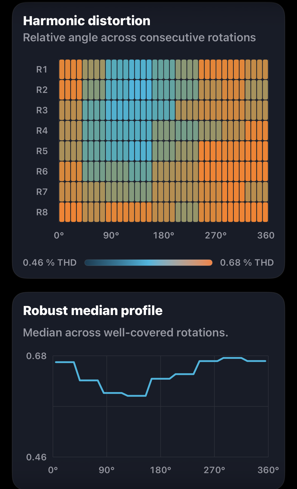
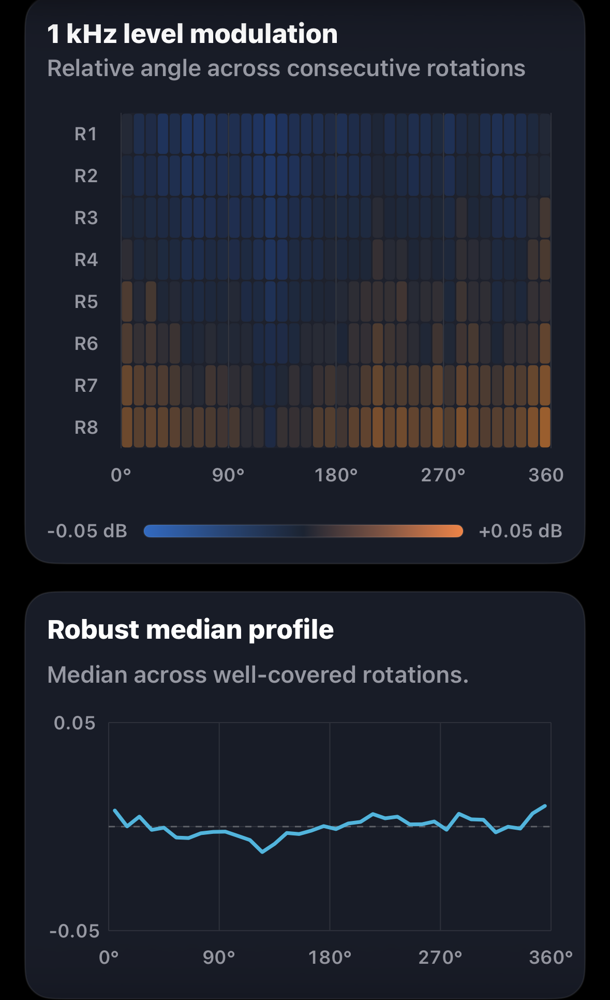
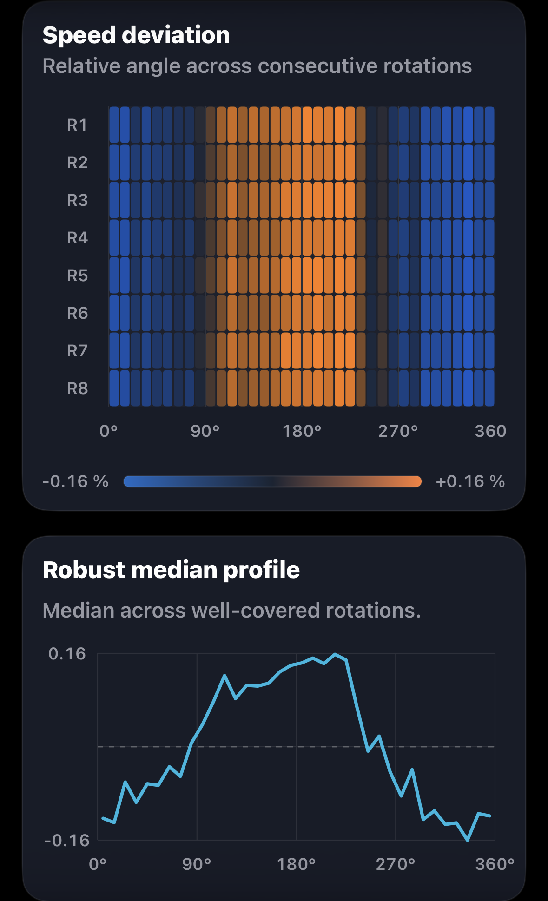

Harmonic distortion

Left channel selected

Groove Scope measurement · GS-2026-0010
A classic Shure, a new MR stylus and careful azimuth adjustment. Measured on a Micro Seiki DQX500 / MA707 through the Audio Research SP20 and Audient EVO4.
Measurement at a glance
Values are transcribed from the preserved Groove Scope PDF. Together they form a capture-specific view of primary performance and supporting channel behaviour.
Rotation fingerprints
Each view combines the angular heatmap and robust median profile produced by Groove Scope. Choose L or R independently on each card. The supplied plots are preserved without retouching; L/R assignment follows the explicit channel labels in the supplied filenames. The PDF describes the 12:04 capture.

Left channel selected

Left channel selected

Left channel selected

Left channel selected
On smaller screens, swipe horizontally to compare all four cards. Both channels show eight rotations (R1–R8). Each screenshot retains its original angular reference; no inter-channel phase alignment is assumed.
Behind the measurement
An original Shure V15 V meets a new MR stylus from the JICO Custom Shop. The Micro Seiki DQX500 and MA707 tonearm feed an Audio Research SP20, with capture through an Audient EVO4. This session explores how the combination responds to a little care in setup.
The initial setup showed an azimuth-related reading of roughly −3.5 dB. Using Groove Scope for iPhone, we quickly brought the indication within the app’s tolerance, although there was still room for finer adjustment. During that process, we noticed a reduction in harmonic distortion, especially the third harmonic.
These are our observations during alignment. The saved report documents the final capture: −0.01 dB signal channel balance and 1.70 dB crosstalk balance. Those are separate readings; the initial −3.5 dB indication was not preserved as a numerical before-and-after record.
Listening and measured context
Even before break-in, the sound was clear and revealing, with a surprisingly quiet background. To our ears, the new MR stylus made a persuasive case for the musical potential of this classic Shure when carefully aligned.
The capture provides an encouraging baseline: 27.3 dB average separation, 0.65% THD on the left and 0.49% on the right. Playback averaged 33.33 RPM (−0.02%), with 0.025% DIN-shaped wow and flutter RMS. The report notes that the right-channel third harmonic varied most during recording and recommends a repeat before further setup changes.
A comparison with modern stylus profiles will follow. For now, these listening impressions and measurements give us a useful starting point for that next session.
Measurement chain
The report title identifies the chain; the measurer confirms the original Shure body, new JICO MR stylus and Audient interface.
Open technical record
The editorial review connects directly to the source report, structured record, checksums, measurement method and original asset archive.
Measurement results
Every reported numeric result in one place: playback speed, weighted and raw stability, channel behaviour, distortion and the second through fifth harmonics.
| Metric | Measured result |
|---|---|
| Playback speed under stylus load | 33.33 RPM |
| Playback speed error | −0.02% vs 33⅓ RPM |
| Settled speed range | 33.27–33.39 RPM |
| Settled speed span | 0.12 RPM |
| DIN-shaped wow & flutter RMS | 0.025% |
| Raw speed variation RMS | ±0.102% |
| Raw speed variation, 2-sigma | ±0.204% |
| Raw wow RMS | 0.096% |
| Raw flutter RMS | 0.032% |
| Channel balance, L−R | −0.01 dB |
| Average channel separation at 1 kHz | 27.3 dB |
| Electrical crosstalk, L→R | −26.5 dB |
| Electrical crosstalk, R→L | −28.2 dB |
| Crosstalk balance / directional difference | 1.70 dB |
| Total harmonic distortion | Left 0.65%; right 0.49% |
| THD difference, L−R | +0.16 percentage points (source report) |
| Second harmonic (H2) | Left −43.8 dB; right −46.3 dB |
| Third harmonic (H3) | Left −70.1 dB; right −73.8 dB |
| Fourth harmonic (H4) | Left −73.4 dB; right −74.8 dB |
| Fifth harmonic (H5) | Left −82.2 dB; right −70.0 dB |
| H2 difference summary | Left 2.5 dB higher (source report) |
| H3 difference summary | Left 3.7 dB higher (source report) |
| Harmonic reliability | Right-channel H3 changed most; repeat before setup changes. |
Unweighted results complement the DIN-shaped measurement. The report advises a repeat because the right-channel third harmonic changed most during recording. Reported differences retain the source precision; they may differ from subtraction of rounded channel values. The initial azimuth-related observation and listening impressions are documented separately from these final-capture results.